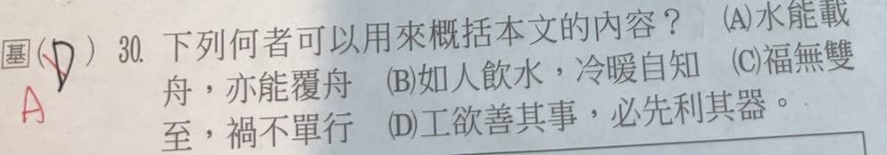

分享原卷｜第 30 題
完整原題
作答所需文章／材料
戰爭為人類帶來災難，但有時也會促進科學發展。 1915年，德軍在比利時與英法聯軍的一次戰爭中首先使用了毒氣，五千多名英法士兵中毒死亡，毒氣區的家禽、動物，唯有豬倖存了下來。這引起人們的注意。 經過觀察，發現每當毒氣來襲時，豬就拼命用嘴拱土，然後將口鼻埋在鬆軟泥土裡。毒氣含毒成分被土壤顆粒吸附，豬吸到的空氣已是經過濾後淨化的氣體。專家依據這個啟示，製成了外型酷似豬鼻的防毒面具。經多次改良，已被廣泛應用到各個領域。 在拿破崙對外征戰中，因法軍戰線太長，為了讓食物能長期貯存，拿破崙懸賞一萬二千法郎徵求解決辦法，最後，馬賽的食品專家想出將食品高溫煮熟、殺菌裝入瓶內，然後密封瓶口的辦法，後來逐漸改良成現在所見的罐頭。 （節錄自張壯年、張穎震《世界歷史祕聞軼事》）下列何者可以用來概括本文的內容？
(A) 水能載舟，亦能覆舟
(B) 如人飲水，冷暖自知
(C) 福無雙至，禍不單行
(D) 工欲善其事，必先利其器
先想一想，再查看答案、解說與原圖
原卷作答：原卷黑筆D，紅筆訂為A
正確答案：A。同一事物可能帶來不同、甚至相反的作用，最能對應戰爭災難與促成科技發展的兩面。
逐項解析
| 選項與原句 | 判讀 | 句意與判斷理由 |
|---|---|---|
| (A) 水能載舟，亦能覆舟 | 應選 | 同一事物可能帶來不同、甚至相反的作用，最能對應戰爭災難與促成科技發展的兩面。 |
| (B) 如人飲水，冷暖自知 | 不選 | 重點是親身體會，非本文主旨。 |
| (C) 福無雙至，禍不單行 | 不選 | 只談禍事接連，未涵蓋促進科學的另一面。 |
| (D) 工欲善其事，必先利其器 | 不選 | 只談做好工具的準備，未概括首句的正反關係。 |
詳細說明與解題步驟
文章開頭已說主旨：戰爭帶來災難，但有時也促進科學發展；後面以防毒面具、食物保存兩例說明。因此A同一事物具有利弊兩面的比喻最相近。
D雖提工具，看似可對應面具與罐頭，卻漏掉文章刻意呈現的正反關係。概括全文須能涵蓋總說與兩個例子，不能只挑到與某個名詞有關的句子。
核對註記：已核對題幹、全部選項與必要材料；教材對應課次未確認，歸綜合。
原圖（僅本題）

